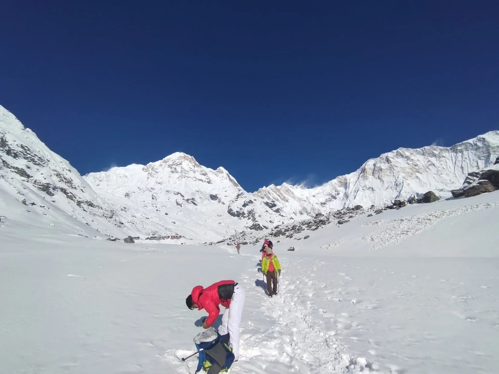
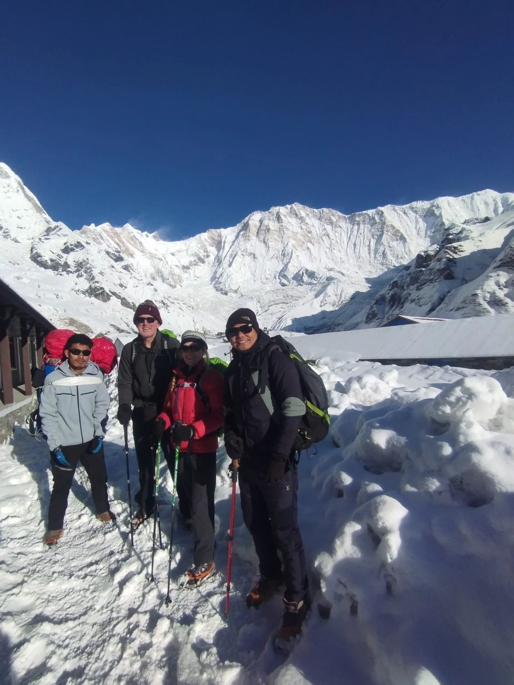
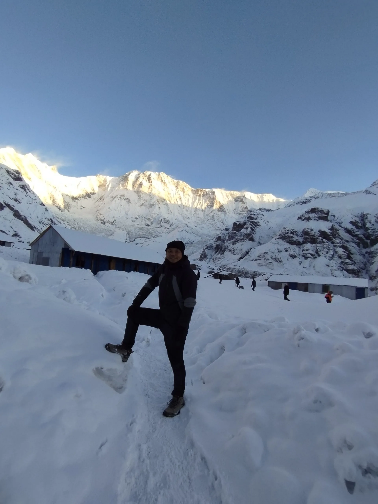

The Frozen Sanctuary: Reality, Solitude & Winter Allure
For adventurous hikers who value solitude, raw mountain drama, and uninterrupted alpine photography above tropical warmth, winter trekking in the Annapurna Sanctuary is a revelation. While peak autumn months witness up to 500 trekkers entering the valley daily, winter reduces foot traffic to a quiet trickle—frequently fewer than 15 to 30 trekkers per day across the entire upper sanctuary trail. You will walk through bamboo and rhododendron forests dusted with hoarfrost, cross crystal-clear glacial streams beneath piercing azure skies, and stand inside the natural 360-degree amphitheater of Annapurna I (8,091m), Annapurna South (7,219m), and Machapuchare (6,993m) without another hiking party in sight.
Yet this ethereal serenity comes with non-negotiable alpine realities. The geography of the Annapurna Sanctuary is unique: it is an enclosed glacial basin approached through a deep, sheer-walled river canyon. In winter, cold air pools inside the gorge, sun hours in deep valleys are severely restricted to 4–6 hours daily, and nighttime temperatures drop with savage speed once the sun dips behind the towering crest of Hiunchuli. Approaching winter ABC requires serious preparation, proper thermal insulation, microspikes or crampons, and a strict respect for local avalanche forecasting.
Pro-Tip from Winter Lead Guides: The winter atmosphere over the Central Himalaya is governed by continental high-pressure systems. This translates to the highest percentage of cloudless, crystal-clear blue skies of any season in Nepal. Visibility frequently exceeds 100 kilometers, delivering peerless photographic conditions from sunrise to sunset.
Month-by-Month Winter Climate: December, January & February
The winter season across the Annapurna Conservation Area (ACAP) encompasses three distinct climatic phases, each demanding specific tactical planning:
- December (Early Winter & Crystal Calm): Early December is often hailed as a hidden golden window. Post-monsoon moisture has completely evaporated, daytime air is mild and crisp at lower elevations (12°C to 16°C), and high-altitude snowfall is usually minimal until late in the month. Nighttime temperatures at ABC hover between -8°C and -12°C. Teahouses operate normally until the third week, when seasonal owners begin winter shuttering.
- January (Deep Winter & Sub-Zero Extremes): January represents the coldest period of the Himalayan calendar. Daytime highs at Annapurna Base Camp barely exceed -2°C to 2°C under direct sun, while night temperatures routinely plunge between -15°C and -20°C. Western disturbances can trigger substantial blizzards, blanketing the sanctuary in 30 to 80 cm of fresh snow. Upper teahouses rotate skeleton crews, and water pipes freeze around the clock.
- February (Late Winter Transition & Awakening Sun): Late February brings lengthening days, stronger solar radiation, and gradually warming afternoons. Lower valleys begin to thaw, though the upper gorge remains packed with hardened ice and accumulated snow. Snowstorms in February tend to be heavier and wetter than in January, increasing avalanche hazard along south-facing thermal slopes as daytime sun heats accumulated drift packs.
| Month | Day Temp (ABC 4,130m) | Night Temp (ABC 4,130m) | Clear Sky Days | Snowpack Risk | Trail Crowds |
|---|---|---|---|---|---|
| Early December | 2°C to 6°C | -6°C to -10°C | 90% | Low (packed dust/frost) | Moderate (dying down) |
| Late December | 0°C to 4°C | -10°C to -15°C | 85% | Moderate (first winter storms) | Very Low |
| January | -4°C to 2°C | -15°C to -22°C | 80% | High (regular snowfall events) | Minimum (solitude peak) |
| Early February | -2°C to 4°C | -12°C to -18°C | 75% | High (deep snowpack) | Very Low |
| Late February | 2°C to 8°C | -8°C to -14°C | 70% | High (thermal afternoon slides) | Low to Moderate |

Snow, Ice, and Frozen Cascades: Navigating the Modi Khola Gorge
The terrain profile of the ABC trail shifts dramatically in winter compared to summer or autumn. From Nayapul or Ghandruk up through Chhomrong (2,170m), the stone steps are typically clear of snow, though damp sections in shadow can develop treacherous black ice early in the morning.
Once you drop down to Chhomrong Khola and ascend through Sinuwa (2,360m), Bamboo (2,310m), and Dovan (2,600m), you enter the dense bamboo and oak forest canopy. The sun struggles to penetrate this steep canyon. Glacial melt trickles over rock slabs freeze into sheets of solid ice across the trail. Between Dovan, Himalaya (2,920m), and Deurali (3,200m), snow begins in earnest. Compacted by earlier trekkers and guides, the narrow trail frequently becomes a glazed bobsled run where slip-and-fall injuries occur without proper microspikes.
Beyond Deurali, the valley widens as tree cover yields to alpine shrubs and moraines. Here, path finding can become complex if fresh windblown powder has obliterated the trench track. Navigating with an experienced local guide who understands the winter lines across stream beds is crucial to avoid post-holing into concealed boulder gaps or stepping onto thin ice bridges over the roaring Modi river.

Crucial Winter Safety: Avalanche Chutes Between Deurali and MBC
The single greatest natural hazard on the Annapurna Base Camp winter trek is snow avalanche activity along the narrow Modi Khola corridor between Himalaya, Deurali, and Machapuchare Base Camp (MBC). The valley walls here rise thousands of vertical meters to the razor crests of Hiunchuli and Machapuchare. Steep couloirs channel massive snow loads directly across the standard trekking trail.
Historically, winter and early spring tragedies have occurred in this exact choke point when heavy snowfalls followed by sudden afternoon warming triggered wet slab or powder avalanches across the lower gorge trail. Understanding the hazard zones and winter reroutes is an indispensable component of winter wilderness literacy:
Avalanche High-Risk Zone Alert: The section known as 'Hinku Cave' (between Himalaya and Deurali) and the main trail passing beneath the western cliffs of Machapuchare between Deurali and MBC are known avalanche discharge chutes. Following heavy winter snowstorms, local ACAP authorities and lodge owners designate the Winter High Route across the eastern river bank. Never attempt to push through freshly snow-loaded gullies during midday warmth.
| Hazard Sector | Altitude | Primary Avalanche Type | Safe Winter Protocol |
|---|---|---|---|
| Hinku Cave Traverse | 3,100m | Powder & Rockfall Chute | Cross early morning before 9:00 AM; move with 20m spacing between hikers. |
| Deurali to Bagar Gorge | 3,250m - 3,450m | Wet Slab / Powder Funnel | Inspect upper couloirs for wind slabs; utilize the eastern winter diversion track if signaled. |
| Machapuchare Base Camp Approach | 3,500m - 3,700m | Slough & Wind Drift Release | Cross open flats efficiently; avoid camping or lingering beneath lateral moraine cornices. |
| Sanctuary Basin to ABC | 3,700m - 4,130m | Low-angle Drift / Cornice Collapse | Stick strictly to central valley floor; stay clear of the southern slopes of Annapurna I. |
Teahouse Operations, Heating & Solitude on Trail
During October and April, securing a private room in Dovan, Deurali, or ABC requires racing ahead or booking weeks in advance, with overflow trekkers sleeping in communal dining hall floors. In winter, the dynamic flips entirely. Teahouses are uncrowded, peaceful, and you will almost certainly secure a private room without advance competition.
However, winter teahouse operations come with logistical trade-offs:
- Skeleton Staffing & Rotational Closures: Because visitor numbers decline steeply, not all lodges remain open. At Deurali, MBC, and ABC, typically only 1 or 2 lodges out of the usual cluster stay operational on a caretaker rotation. When you arrive, you will receive personalized hospitality and hot meals, but menu choices may be slightly more streamlined than in peak season.
- Dining Room Heating: Dining rooms are heated for 2–3 hours in the evening (usually from 5:30 PM to 8:00 PM) using central kerosene, dried wood, or pressed-fuel stoves. However, once dinner concludes and the fire is extinguished, indoor temperatures rapidly equalize with the outside sub-zero atmosphere.
- Bedroom Insulation: Himalayan teahouse bedrooms are uninsulated, unheated timber or plywood boxes with single-pane glass windows. Indoor bedroom temperatures at ABC in January consistently register between -8°C and -15°C. A quality -20°C comfort-rated down sleeping bag is entirely mandatory.

Crystal Inversions & Snowbound Giants: Photography in Sub-Zero Air
For landscape photographers and alpine purists, winter offers optical clarity that autumn cannot replicate. The cold, dry continental airstream eliminates atmospheric haze, dust particles, and convective water vapor. Peak ridges stand etched against deep indigo skies with razor-sharp definition.
Key photographic highlights unique to winter ABC include:
- Valley Temperature Inversions: Cool morning air trapped in the Pokhara and Modi river valleys frequently creates sea-of-cloud inversions below 2,000m, leaving Poon Hill and high ridge viewpoints floating over a glowing white ocean at sunrise.
- Full Snow Fluting: While autumn often leaves the rocky south face of Annapurna I and Machapuchare partially bare after monsoon melt, winter coats every couloir, rib, and serac in gleaming white frost, creating dramatic shadow-and-light contrasts.
- Frozen River Falls: The Modi Khola canyon features dozens of hanging waterfalls cascading off vertical cliffs. By January, these waterfalls freeze into towering blue ice pillars and frozen cathedral curtains, offering spectacular foregrounds along the trail.

Optimized 8-Day Winter Itinerary: Safety-Paced Sanctuary Ascent
Winter requires an itinerary paced with deliberate caution. Short winter daylight hours (sun sets around 5:15 PM) mean you must reach your evening lodge by 3:30 PM to avoid hiking in biting dusk temperatures. Furthermore, pacing must allow guides to assess afternoon snow conditions before pushing through the Deurali-MBC gorge. Here is our field-proven 8-day winter itinerary starting from Pokhara:
| Day | Route Segment | Distance | Hiking Hours | Altitude | Winter Tactical Note |
|---|---|---|---|---|---|
| Day 01 | Drive Pokhara to Matque (3 hrs), trek to Chhomrong | 8.5 km | 4.5 - 5 hrs | 2,170 m | Warm afternoon hike; stone steps generally free of snow. |
| Day 02 | Chhomrong to Dovan via Sinuwa & Bamboo | 10.8 km | 5.5 - 6 hrs | 2,600 m | Shaded river valley; watch for black ice on damp wooden bridges and stone slabs. |
| Day 03 | Dovan to Deurali via Himalaya Hotel | 8.2 km | 4.5 - 5 hrs | 3,200 m | Snowline begins; strap on microspikes past Hinku Cave. Arrive by 2:30 PM. |
| Day 04 | Deurali to Machapuchare Base Camp (MBC) | 5.8 km | 3.5 - 4.5 hrs | 3,700 m | Cross avalanche hazard zone early in morning (depart by 7:00 AM); monitor high snow. |
| Day 05 | MBC to Annapurna Base Camp (ABC) sunrise & exploration | 4.2 km | 2.5 - 3.5 hrs | 4,130 m | Gentle moraine climb in deep snow; spectacular 360° winter amphitheater panorama. |
| Day 06 | ABC sunrise photography, descend to Bamboo | 15.0 km | 6 - 7 hrs | 2,310 m | Fast descent; careful footing through packed ice chutes down to Dovan. |
| Day 07 | Bamboo to Jhinu Danda (Natural Hot Springs) | 9.0 km | 4.5 - 5 hrs | 1,780 m | Climb up Chhomrong ridge, descend to Jhinu hot riverside thermal pools. |
| Day 08 | Jhinu Danda to Siwai/Matque, drive to Pokhara | 4.0 km | 2 hrs trek + 3 hrs drive | 820 m | Cross long suspension bridge; scenic return drive to Pokhara lakeside. |

Essential Winter Gear: Layering, -20°C Bags & Traction Cleats
In winter, your clothing and sleep systems are life-support equipment. Inadequate insulation can lead to rapid hypothermia, frostnip, and forced retreat. The key to staying comfortable across the wide temperature swings (from +14°C at noon in Sinuwa to -18°C at night at ABC) is an uncompromising multi-layer thermal strategy:
| Gear System | Recommended Specification | Temperature Rating | Why It Is Mandatory |
|---|---|---|---|
| Down Sleeping Bag | 800+ fill power goose down (1,000g fill weight) | -20°C Comfort Rating | Teahouse blankets freeze stiff; this ensures warm, restful recovery nights. |
| Heavy Down Jacket | Baffled construction with insulated hood | Rated to -20°C | Worn immediately upon arriving at teahouses and for morning sunrise shoots. |
| Traction Microspikes | 10-12 stainless steel spikes with elastomer band | Sub-zero elastomeric rubber | Prevents catastrophic falls on polished blue ice staircases from Dovan to MBC. |
| Base Layers | 200-250 g/m² 100% Merino wool (top and bottom) | High thermal efficiency | Wicks perspiration away from skin to prevent post-hike conductive chill. |
| Footwear | Sturdy waterproof leather/synthetic trekking boots | Gore-Tex or eVent membrane | Keeps feet dry when post-holing through afternoon slush and powder drifts. |
| Eye Protection | Category 3 or 4 glacier glasses / polarized sunglasses | 100% UV400 protection | Prevents debilitating snow blindness caused by intense high-altitude snow reflection. |
Additionally, carry waterproof gaiters to prevent snow from entering the collar of your boots, windproof fleece-lined mittens (mittens keep fingers far warmer than separated gloves), and a thermal balaclava for sub-zero summit mornings.
Hypothermia, Cold-Induced AMS & Hydration Tactics
Cold weather significantly compounds the physiological challenges of high altitude. In sub-zero temperatures, the human body burns up to 30% more calories simply maintaining core thermal homeostasis. Furthermore, breathing frigid, bone-dry alpine air accelerates respiratory moisture loss, triggering insidious dehydration that thickens blood and dramatically increases susceptibility to Acute Mountain Sickness (AMS).
Follow these essential winter medical protocols:
- The 4-Liter Hydration Rule: In the cold, you rarely feel thirsty. Force yourself to drink at least 3.5 to 4 liters of warm fluids daily (black tea, ginger lemon honey tea, garlic soup, and boiled water). Dehydration mimics and accelerates altitude sickness symptoms.
- Hot Water Bottle Sleeping Hack: Purchase a classic wide-mouth Nalgene bottle. At night, have the teahouse fill it with boiling water, slip it into an insulated wool sock, and place it at the foot of your sleeping bag. It will warm your bag for 6 hours and provide unfrozen drinking water by morning.
- Pre-Ventilation on Ascents: Strip off insulating jackets *before* you begin steep stair climbs. Sweating heavily into cotton or synthetic clothing soaks your base layers; once you stop to rest in a freezing wind, that dampness chills your core rapidly, inducing rapid hypothermia.

Frozen Water Pipes, Device Drainage & Power Bank Survival
Everyday technical routines that operate smoothly in autumn turn into survival chores in winter. Understanding these logistical friction points will save you endless frustration:
- Frozen Water Systems: In Dovan, Deurali, MBC, and ABC, external above-ground plastic water pipes freeze completely between 4:00 PM and 9:00 AM. Flush toilets and bathroom taps will not work. Teahouses provide buckets of cold river water (often with an ice crust on top) or warm water upon request for a small fee (NPR 200–400).
- Catastrophic Battery Voltage Drops: Lithium-ion batteries in smartphones, cameras, and drones lose up to 70% of their effective charge when exposed to temperatures below 0°C. Never leave your electronics in your backpack or room overnight. Store all batteries, phones, and power banks inside a wool beanie or pouch inside your sleeping bag next to your chest.
- Solar Charging Reliability: Because winter skies are exceptionally clear, solar power systems in lower teahouses recharge reliably. However, teahouses above Deurali rely on smaller battery banks that drain quickly in sub-zero cold. Carry at least two 20,000mAh high-density power banks with low-temperature tolerance.
Permits, TIMS, Checkposts & Guide Mandates in Off-Season
Trekking to Annapurna Base Camp in winter requires the exact same legal documentation as any other time of year. Checkposts at Birethanti, Chhomrong, and Ghandruk remain staffed throughout the winter months:
- Annapurna Conservation Area Permit (ACAP): NPR 3,000 per person (~USD $23) for foreign nationals; NPR 1,000 for SAARC nationals. Available at the Nepal Tourism Board office in Kathmandu or Pokhara.
- TIMS Card (Trekkers' Information Management System): NPR 2,000 per person (~USD $15). Under Nepal Tourism Board regulations, foreign trekkers must arrange their TIMS card and trek via a licensed trekking agency with a certified guide.
- Mandatory Guide Rule: Having a licensed local guide is not just a government regulation—it is a critical safety safeguard in winter. A seasoned guide knows which lodges are open, tracks daily avalanche hazard bulletins, carries emergency satellite communications, and knows the safe winter detour trails when snow obscures the route.
Budget Breakdown: Winter Teahouse Costs, Gear & Transport
Trekking in the winter off-season can offer minor savings on transport and Pokhara accommodations, but teahouse food and heating costs in the upper sanctuary remain stable or slightly higher due to the winter supply chain challenges (mules and porters face frozen trails). Below is an accurate budget projection for an 8-day winter ABC trek:
| Expense Category | Estimated Cost (NPR) | Estimated Cost (USD) | Winter Practical Notes |
|---|---|---|---|
| Permits (ACAP + TIMS) | NPR 5,000 | ~$38 | Fixed official government fees; arranged prior in Pokhara. |
| Private Jeep / Taxi (Pokhara-Matque return) | NPR 12,000 - 16,000 total | ~$90 - $120 total | Split between passengers; 4WD jeep required for rugged mountain road. |
| Teahouse Lodging (7 nights) | NPR 500 - 1,000 / night | ~$4 - $8 / night | Standard twin room rates; occasionally discounted in off-peak winter. |
| Daily Food & Hot Drinks | NPR 3,500 - 4,500 / day | ~$27 - $35 / day | Dal bhat, hot porridge, soups, and boiled water; prices rise with altitude. |
| Hot Showers & Battery Charging | NPR 400 - 800 / day | ~$3 - $6 / day | Gas geyser showers available up to Bamboo; bucket hot water at high lodges. |
| Licensed Winter Guide | NPR 3,800 - 4,800 / day | ~$28 - $36 / day | Includes guide's wage, food, winter gear, and insurance coverage. |
| Porter (Optional but recommended) | NPR 2,800 - 3,500 / day | ~$21 - $27 / day | Carries heavy winter sleeping bags and bulky thermal gear (up to 20kg). |
Winter Rescue Logistics, Satellite Comms & Insurance Essentials
In winter, an emergency situation—such as a fractured ankle from an ice slip, severe hypothermia, or high-altitude pulmonary edema (HAPE)—demands immediate and aggressive response. You cannot afford ambiguity in your emergency evacuation strategy:
- Helicopter Evacuation Protocol: Pokhara is only 15–20 minutes flight time by helicopter from Annapurna Base Camp or Deurali. In winter, clear morning skies generally facilitate swift helicopter landing. However, flights cannot operate after 2:00 PM if high-altitude valley fog develops or sudden snowfall reduces visibility below VFR (Visual Flight Rules) minimums.
- Travel Insurance Prerequisites: Ensure your mountaineering travel insurance explicitly covers medical emergency helicopter extraction up to at least 4,500 meters without a restrictive hospital admission pre-authorization clause. Keep your policy number, insurer emergency dispatch desk number, and agency contact laminated in your wallet.
- Satellite Communication: Cell reception (NTC/Ncell) is patchy above Dovan and non-existent between Deurali and ABC. Guides at Igloo Himalaya Treks carry satellite messaging and GPS devices (Garmin inReach) to coordinate weather alerts and immediate medevac dispatch.

Is ABC in Winter Right for You? Expert Summary & Practical Rules
The Annapurna Base Camp trek in winter is not designed for everyone. If you require balmy tropical temperatures, lush green monsoon greenery, bustling social dining rooms, and carefree footwear choices, stick to October or April. But if you seek a true wilderness encounter with the Himalaya—where you can stand alone at 4,130 meters amid an amphitheater of 8,000-meter giants wrapped in virgin white snow—winter is an unmatched, life-defining adventure.
Keep these five golden winter rules firmly in mind:
- Never Compromise on Sleep Insulation: Rent or buy an authentic -20°C comfort-rated down sleeping bag in Pokhara or Kathmandu. A restless night shivering at -12°C drains your physical and mental stamina for the high pass.
- Always Carry Microspikes: Crampons are generally overkill for the standard trail, but compact slip-on traction microspikes are non-negotiable between Dovan and ABC.
- Cross Avalanche Zones Before Noon: Start your hiking day at 6:30 AM or 7:00 AM. Early morning snow is frozen, solid, and stable; afternoon sunshine warms slopes, increasing wet slab avalanche risk.
- Trek With a Certified Local Guide: In winter, trail conditions change overnight with snow drifts. Having a trained professional ensures real-time hazard evaluation and access to open teahouses.
- Stay Flexible: Build at least one or two contingency days into your overall Nepal itinerary. If a sudden winter storm passes through the sanctuary, sitting out a snow day at Bamboo or Dovan is far safer than rushing into a blizzard.

Ready to Experience the Himalayas?
Whether you are preparing for high-altitude trekking, cultural circuits, or alpine summit expeditions, start planning a bespoke journey tailored to your fitness, travel season, and style.